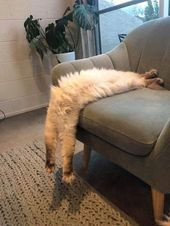

--Svend Brinkmann
My friend keeps a list of her thoughts. She wants to be aware of them and not get caught up in her story. She wants to figure out what brought on feelings xyz so that they don’t control her. She wants to get outside her self.
Like almost everyone else, she thinks she needs to work at this be-your-best-self thing. She tries hard to do it right.
Because she wants peace.
She's certainly not alone. It’s an almost universal idea that if we work hard, we can find the right technique/ approach/ enlightenment, and then all the struggle will go away and we will never be bothered by anything ever again.
Unsurprisingly, we’re tired.
Really, really, tired.
I mean, it could be that what many of us call “unmotivated” is simply exhaustion.
Because in order to get on top of enlightenment and self improvement, to stay peaceful and not get triggered when the boss is unfair, or to not worry about money or health or the kids’ future, to be kinder and less reactive…
We have to watch our selves. Constantly.
“How am I doing? Is this good? Is this ok? Can I fix it? Can I figure out what’s happening and then make it stop? Am I happy? Should I do more? Less? Am I messing up? Am I not enlightened/peaceful/happy because I’m doing things wrong?”
Watching, evaluating, critiquing, defending. The review of our selves is non-stop.
All in an attempt to be more at ease.
We wacky humans think we can attain an effortless state by using vast amounts of effort.
Somehow not noticing that all that hard work only yields more hard work.
With no end. Because there’s always more self-consciousness.
Phew. Who needs a nap?
This is what happens when we think we are a self.
That sucker needs bolstering, propping up, and maintenance. Otherwise it tips over like the unsubstantial, non-existent thing it is.
So hello meditations, satsangs, inquiries, therapies, workouts, somatic work, self-help books, affirmations.
And the funny thing is, what’s doing all this watching, evaluating, disapproving, and determining what needs more work?
The me, that's what. Being "aware of itself," pretending to be an outside thing other than itself, policing itself, attempting to dissolve…
its own self.
Um… what?
We're trying to be conscious of the mind, by using the mind to do it.
Boys and girls, can you say, “Unwinnable game?”
And meanwhile, though mind appears to busily work on these very important projects, happily having something to solve, perhaps not-so-secretly,
it really likes things just fine as they are.
Because with all that smokescreen effort, it never has to be seen as not actually there at all.
We can begin to see how we might need tons of recovery time, and tons of, “Sorry-I-can’t-go-out-I-have-something-very-important-to-do”-while-actually-hunkered-down-in-bed, time.
Fine, so what’s the alternative? What can we do about all this?
Funny question, that. Because it conveniently misses that the focus on what we can do actually adds another layer of effort to an already over-burdened existence.
“I have to do something about all this trying to do something.”
Focus on doing something about all the efforting is just more efforting.
It’s a trickster, the mind.
Maybe we don’t have to do anything. Maybe we can just let all that self-monitoring go for a bit and just be.
As is.
Which of course, after spending lifetimes trying to improve, most of us have absolutely no idea how to “do.”
So then we might simply notice that we find existing without effort to be effortful.
Because just noticing the game often allows an ease can come, on its own.
Requiring no effort.
And though perhaps this possibility feels alien and maybe even alarming-
because after all, what happens to mind and self if there’s nothing to think about?-
Luckily for our exhausted selves,
Ease, like sleep, comes on its own.
It can’t be forced or manufactured.
So we don’t have to do anything to make it come.
All we might do is notice.
And really maybe
not even that.
every week.
"When you try to stay on the surface of the water, you sink; but when you try to sink, you float'."
--Alan Watts
The only real rest comes when you’re alone with god." --Rumi
